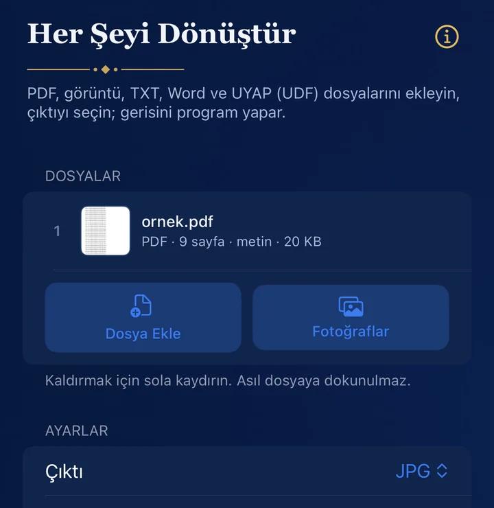
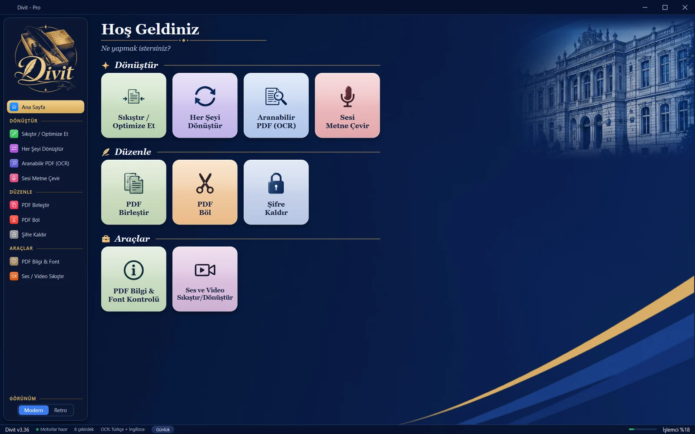
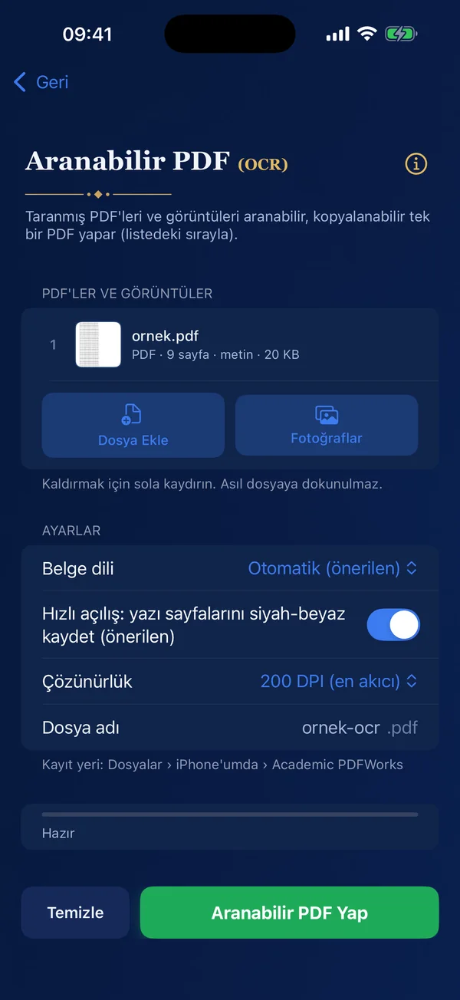
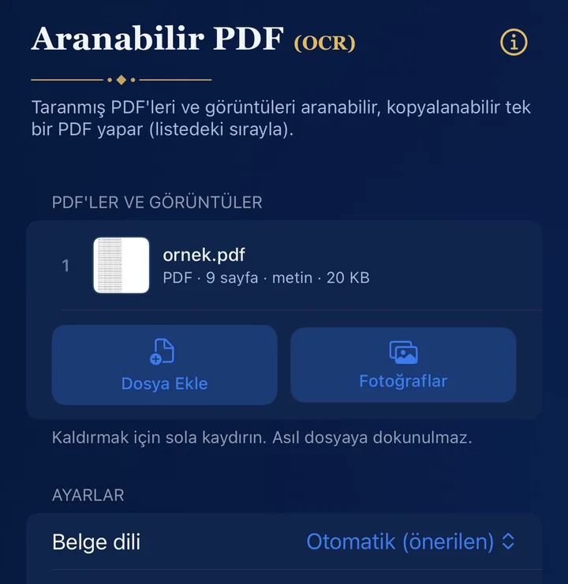
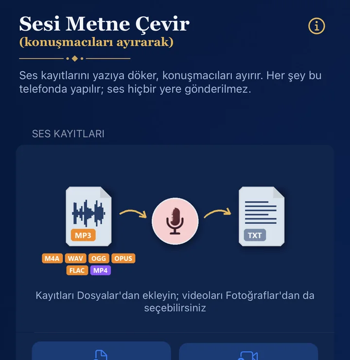
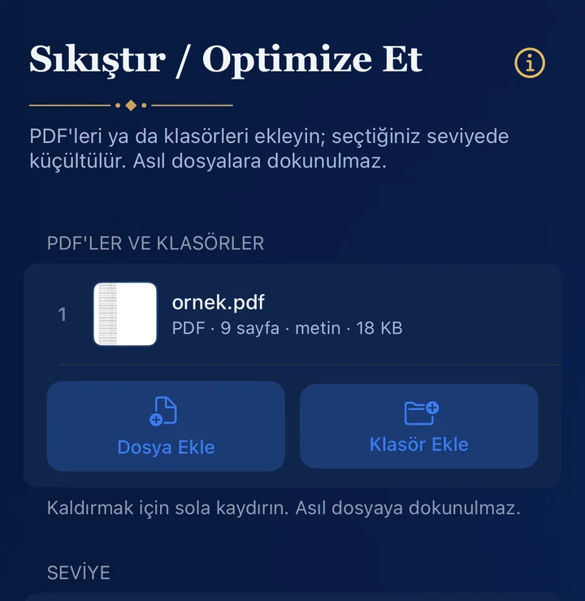
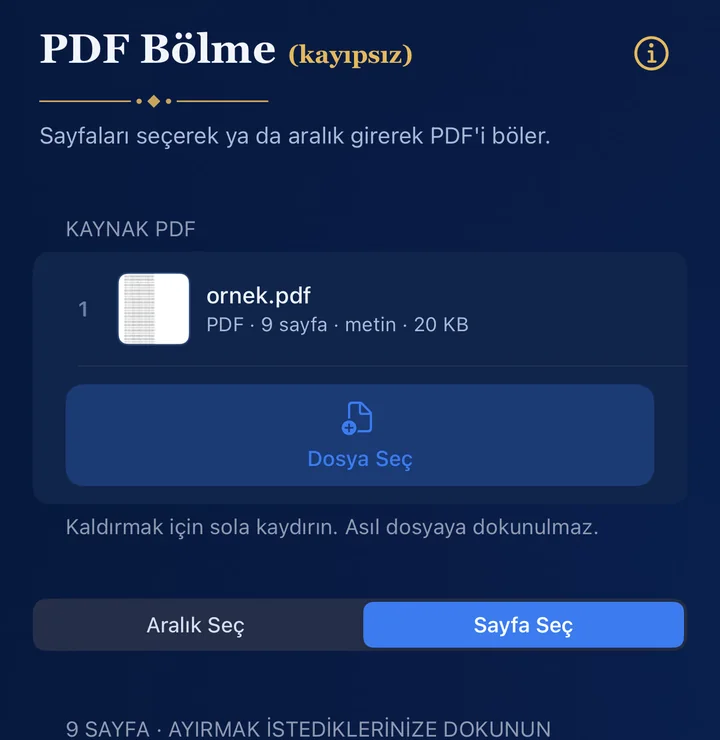
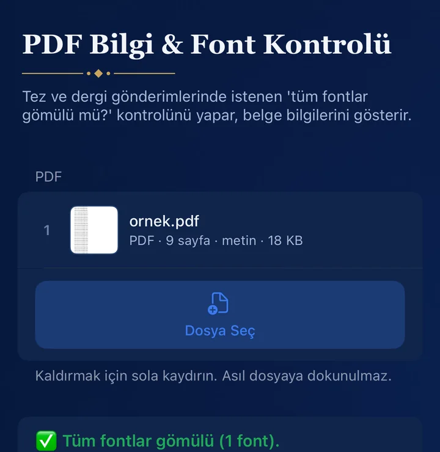
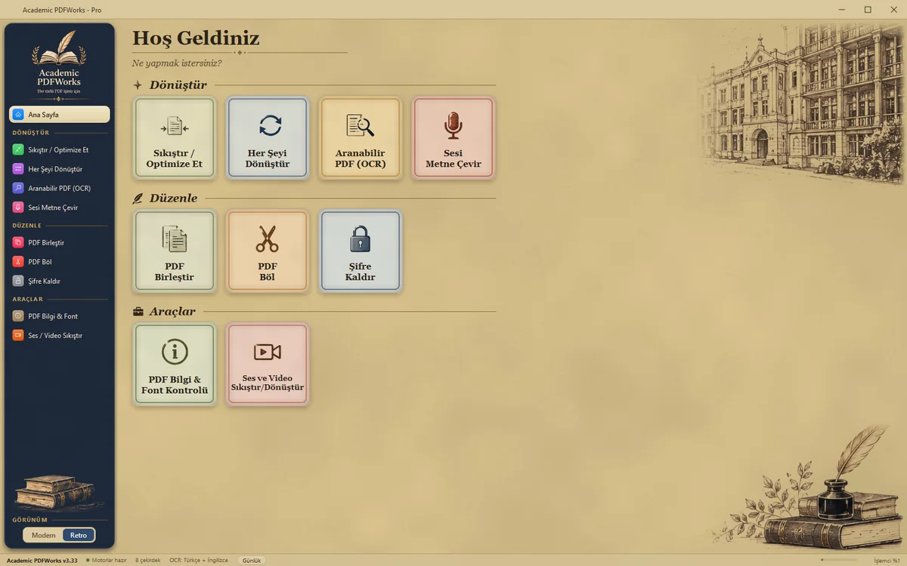

Her Şeyi Dönüştür
PDF, Word, Excel, UYAP (UDF), görüntü ve metin dosyalarını birbirine çevirir. Yazı tipleri, tablolar ve sayfa düzeni korunur.
Taranmış belgeleri aranabilir yapın, PDF'i Word'e ve UDF'e çevirin, ses kayıtlarını yazıya dökün. Her şey kendi cihazınızda yapılır; dosyalarınız hiçbir yere gönderilmez.


Avukatlar, akademisyenler, öğrenciler ve belgeyle çalışan herkes için.

PDF, Word, Excel, UYAP (UDF), görüntü ve metin dosyalarını birbirine çevirir. Yazı tipleri, tablolar ve sayfa düzeni korunur.

Taranmış belgeleri ve fotoğrafları aranabilir, kopyalanabilir PDF yapar. Türkçe ve İngilizce.

Ses kayıtlarını ve WhatsApp sesli mesajlarını yazıya döker, konuşmacıları ayırır.

PDF'leri kalite kaybı olmadan küçültür ya da seçtiğiniz çözünürlüğe indirir; klasörleri topluca işler.

Sayfaları önizlemeden seçerek böler, PDF'leri birleştirir. Kayıpsızdır: sayfalar yeniden sıkıştırılmaz.

Tez ve dergi gönderimlerinde istenen "bütün yazı tipleri gömülü mü?" denetimini yapar.
Ayrıca ses ve video sıkıştırma ile telefonla çekilmiş belge fotoğraflarını düzeltme. iPhone sürümünde PDF'ten Word'e ve UDF'e çevirme, Excel ve fotoğraf düzeltme henüz yok; sonraki sürümlerde gelecek.
Klasik, kâğıt dokulu bir görünümü mü seversiniz? Retro temaya tek dokunuşla geçin. Araçlar aynı yerde, aynı kolaylıkta.

Belgeleriniz ve kayıtlarınız hiçbir sunucuya gönderilmez.
Üyelik, reklam ya da kullanım takibi yoktur. Gizlilik politikası
Her işlem yeni bir dosya üretir; asıl dosyanıza dokunulmaz.
Ücretsiz; kurulum bir dakika sürer. Sorunuz olursa Destek sayfasına bakın ya da whosaidreal@gmail.com adresine yazın.
İndirme sayfasına gitDivit is a free PDF, OCR, UYAP (UDF), Word, Excel and audio toolkit for Windows and iPhone. It makes scanned documents searchable, converts between document formats while keeping the layout, and transcribes recordings with speaker separation. Everything runs on your own device; your files are never uploaded. The interface is in Turkish.